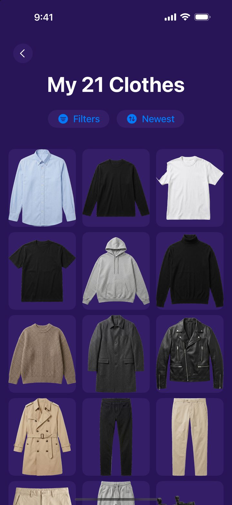
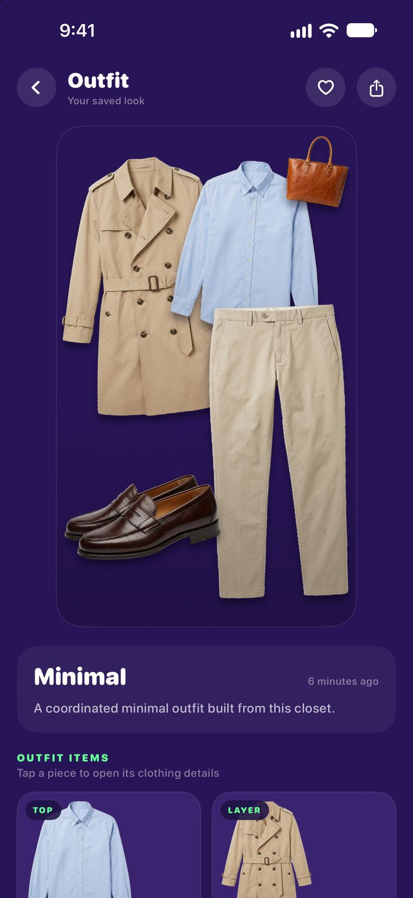
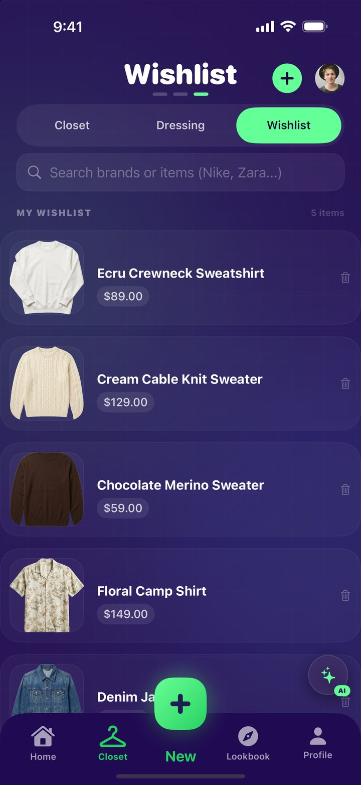
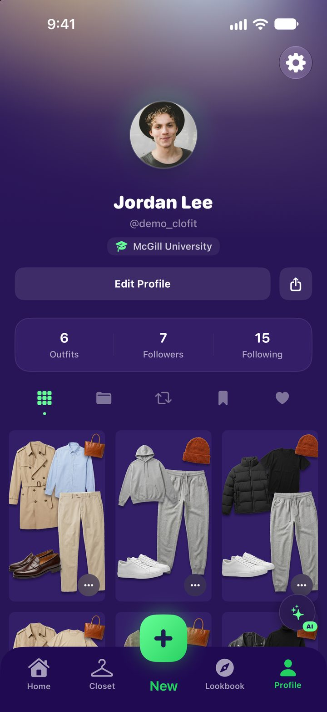

Clofit
« J'ai un dressing plein et rien à me mettre. » Clofit transforme les vêtements que tu possèdes déjà en tenues créées par IA, selon la météo, et te connecte à ton campus pour partager ton style.
"My closet is full and I have nothing to wear." Clofit turns the clothes you already own into AI-made outfits matched to the weather, and connects you with your campus to share your style.
- PlateformePlatform
- iPhone, gratuitiPhone, free
- LanguesLanguages
- Français et anglaisFrench and English
- PublicAudience
- 13 ans et plus, modéré13+, moderated
- PériodeTimeline
- 2025 – 20262025 – 2026

Le problèmeThe problem
On porte toujours les mêmes vêtements, pas parce qu'on n'en a pas d'autres, mais parce qu'on ne les voit pas tous et qu'on n'a pas le temps de composer une tenue chaque matin. Les apps de mode existantes poussent surtout à acheter. Clofit part de ce que tu as déjà.
We keep wearing the same clothes, not because we have nothing else, but because we can't see everything we own and have no time to put an outfit together every morning. Existing fashion apps mostly push you to buy. Clofit starts from what you already have.
Comment ça marcheHow it works
- Une photo suffit : Clofit retire le fond et propose une fiche du vêtement (type, couleurs, style, coupe quand c'est identifiable). Tu corriges si besoin, et ton dressing se construit tout seul.
- Tenue du jour : choisis un style (streetwear, old money, chic, sport, casual) et Clofit compose trois tenues à partir de tes vrais vêtements, selon la température dehors.
- Styliste IA : tu lui parles naturellement (« Streetwear pour ce soir », « Il fait −18°, je sors »). Ses réponses s'appuient sur ton dressing et tes préférences.
- Social : OOTD qui reste 24 h, séries quotidiennes, fil de ton école et Vibe Rooms.
- En magasin : photographie un article et Clofit te dit avec quoi le porter et s'il complète vraiment ton dressing.
- One photo is enough: Clofit removes the background and suggests an item profile (type, colours, style, fit when identifiable). You fix anything, and your closet builds itself.
- Outfit of the day: pick a style (streetwear, old money, chic, sporty, casual) and Clofit builds three outfits from your real clothes, following the outside temperature.
- AI stylist: you talk to it naturally ("Streetwear for tonight", "It's −18°, I'm heading out"). Its answers draw on your closet and preferences.
- Social: an OOTD that stays up 24 hours, daily streaks, your school's feed and Vibe Rooms.
- In store: snap an item and Clofit shows what to wear it with and whether it really completes your closet.




Choix de conceptionDesign decisions
Deux modes de stylisteTwo stylist modes
Studio explore plus loin le dressing et explique ses choix, Essentiel répond vite aux questions du quotidien. Des réponses approfondies quand il le faut, rapides le reste du temps.
Studio looks deeper into the closet and explains its choices, Essential answers everyday questions fast. Deep answers when needed, quick ones the rest of the time.
La météo décide de la coucheWeather picks the layer
La température change la tenue proposée (une couche, manteau, etc.). On peut aussi désactiver la météo dans les réglages.
Temperature changes the suggested outfit (one layer, coat, and so on). Weather can also be turned off in settings.
Données jamais venduesData never sold
Une app qui voit ton dressing et tes photos doit être claire là-dessus : les données ne sont jamais vendues, et l'espace social est modéré, pour les 13 ans et plus.
An app that sees your closet and photos has to be clear about it: data is never sold, and the social space is moderated, for ages 13 and up.
Une raison de revenir chaque jourA reason to come back daily
La tenue du jour, les séries et l'OOTD qui expire en 24 h donnent un rendez-vous quotidien, sans pousser à acheter.
The outfit of the day, streaks and a 24-hour OOTD give a daily habit, without pushing anyone to buy.